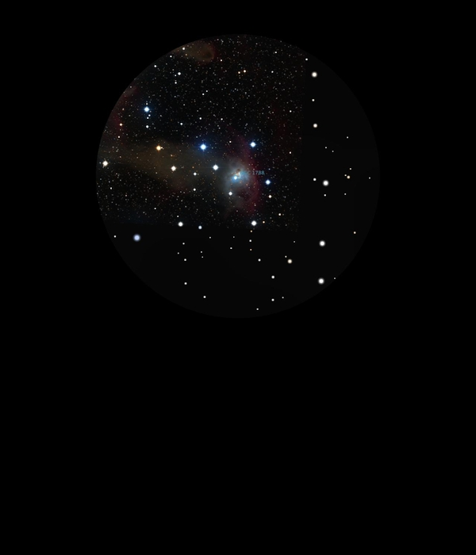

NGC 1788
Reflection Nebula in Orion
NGC 1788
Mag 9.0
21/01/17
Another very faint Reflection Nebula, and in fact only a hint
of this one which sits in a very neat little 'Delphinus' like
asterism in 24mm of five stars, the brightest at Mag 7.6 being
HIP23745 and the others of Mags 8.30, three stars! and the
last of Mag 8.85
Strange that Stellarium gives three stars of Mag 8.30 but only
one has a number, HIP23819